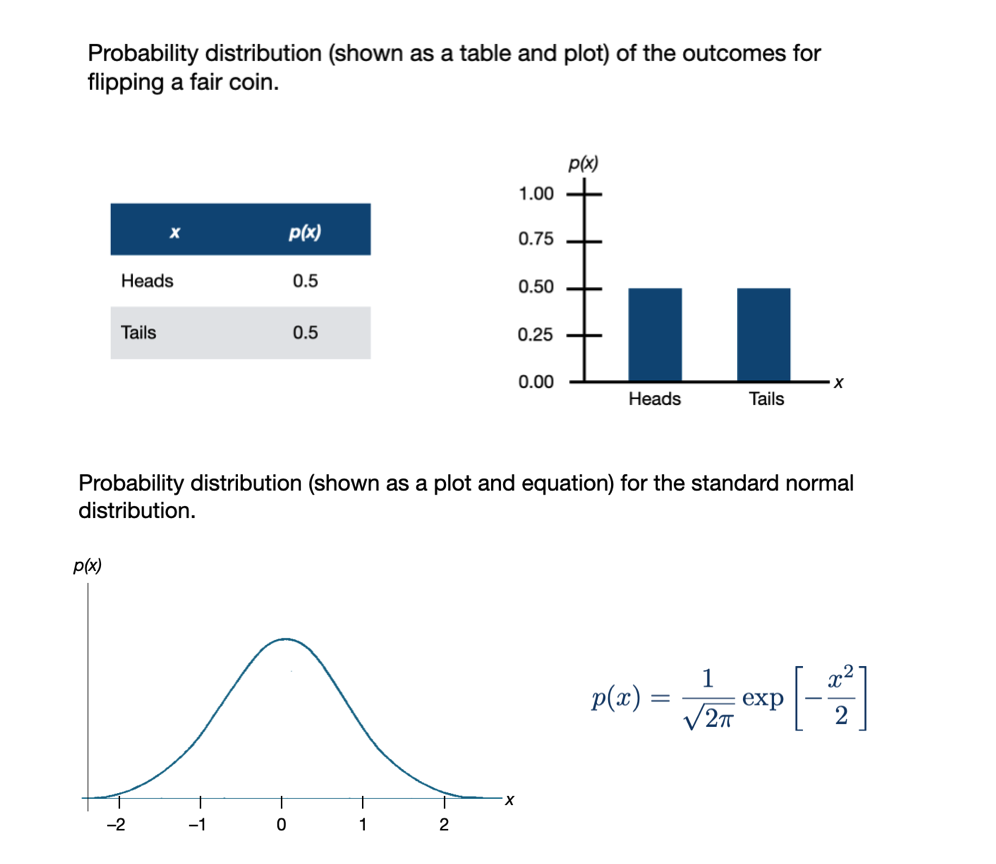
5 Mathematical Foundations: Probability Density
Understanding ideas about probability distributions (especially continuous probability distributions) is essential for understanding likelihood.
5.1 Terminology and Basic Ideas of Probability Distributions
A probability distribution is simply a mapping of every outcome in the sample space to a probability. (It is conventional to use x to denote the outcomes.) This mapping can take many forms such a list, a plot, or an equation. All are reasonable to define the probability distribution, although some of these are more typical for discrete variables (e.g., list, plot), while others are more typical for continuous distributions (e.g., plot, equation). Here are a couple different probability distributions:
In general, the probability of an outcome (p(x)) is defined as the number of times an outcome appears in the sample space divided by the total number of outcomes. So, for example, in the probability experiment of flipping a fair coin twice, the sample space is:
\[ S = \{HH,~HT,~TH,~TT\} \]
The probability of a head and a tail (assuming order doesn’t matter) is:
\[ p(HT~\mathrm{or}~TH) = \frac{2}{4} = 0.5 \] This falls apart when we move to continuous distributions. For example, consider finding the probability of a zero occurring in the standard normal distribution given in Figure 6.1. The sample space includes every outcome possible and is:
\[ S = \{-\infty, ~ +\infty\} \] so the probability of zero (which occurs once in that sample space) is:
\[ p(0) = \frac{1}{\infty} \approx 0 \]
Likewise the probability of 1 or 2 is also:
\[ \begin{split} p(1) = \frac{1}{\infty} \approx 0 \\ p(2) = \frac{1}{\infty} \approx 0 \end{split} \]
In fact the probability of every possible outcome is 0. The problem is that if we add all the probabilities together, we have to get 1 (Law of Probability), and in this case we don’t; the sum of \(0 + 0 + \ldots + 0 = 0\). Because of this, in continuous distributions, we typically compute the probability of a range of values. For example, in our standard normal distribution:
\[ \begin{split} p(x \leq 0) = 0.5 \\ p(-1 \leq x \leq 1) = 0.68 \\ p(-2 \leq x \leq 2) = 0.95 \end{split} \]
5.1.1 Probability Density
In a continuous distribution we also need to account be able to talk about the fact that some outcomes are more likely than other outcomes. For example, in our standard normal distribution outcomes near zero are more probable than outcomes near 1, which are more probable than outcomes near 2, etc. Since we can’t use probability to do this (remember the probability of each outcome is the same, namely 0), we use something called probability density. This is akin to a relative probability, so outcomes with a higher probability density are more likely than outcomes with a lower probability density.
The mapping of all the outcomes to their probability densities is called a probability density function (PDF). Thus the equation or “bell-shaped” curve describing the standard normal distribution in Figure 6.1 is technically a PDF Here are some laws governing PDFs:
- Probability densities are always positive.
- The probability of an outcome x between a and b equals the integral (area under the curve) between a and b of the probability density function. That is:
\[ p(a \leq x \leq b) = \int_a^b p(x) dx \]
- The area under the curve from negative infinity to positive infinity is 1. That is:
\[ p(-\infty \leq x \leq +\infty) = \int_{-\infty}^{+\infty} p(x) = 1 \]
Next we will look at the PDF for a normal distribution.
5.2 PDF for a Normal (Gaussian) Distribution
The probability density function (PDF) of a normal distribution is mathematically defined as:
\[ p(x) = \frac{1}{\sigma\sqrt{2\pi}}\exp\left[-\frac{(x-\mu)^2}{2\sigma^2}\right] \]
for \(-\infty \leq x \leq \infty\).
To calculate the probability density, we need three pieces of information: (1) the outcome (x-value) for which we want to determine the probability density, (2) the mean (\(\mu\)) of the normal distribution x is a member of, and (3) the standard deviation (\(\sigma\)) of the normal distribution x is a member of. Then, we can compute the probability density (\(p(x)\)) for a particular \(x\) value by using the equation.
As an example, consider a normal distribution with a mean of 50, and a standard deviation of 10. The probability density for \(x=65\) can be found using,
\[ \begin{split} p(65) &= \frac{1}{10\sqrt{2\pi}}\exp\left[-\frac{(65-50)^2}{2\times10^2}\right] \\[1ex] &= 0.01295176 \end{split} \]
Using R, we can carry out the computation,
# Compute the probability density of x=65 in N(50,10)
(1 / (10 * sqrt(2 * pi))) * exp(-(225) / 200)[1] 0.01295176There is also a more direct way to compute this using the dnorm() function. This function computes the density of x from a normal distribution with a specified mean and sd.
# Compute the probability density of x=65 in N(50,10)
dnorm(x = 65, mean = 50, sd = 10)[1] 0.01295176Symbolically, we might write
\[ P\bigg(x=65 \mid \mathcal{N}(50,10)\bigg) = 0.01295176 \]
which is read:
The probability density of \(x=65\) GIVEN the normal distribution having a mean of 50 and standard deviation of 10 is equal to 0.013.
Note that the probability density for a value is not only a function of x, but also depends on the mean and standard deviation of the normal distribution. For example, the probability density of \(x=65\) in the normal distribution having a mean of 30 and standard deviation of 20 is a different value than the probability density we found earlier.
# Compute the probability density of x=65 in N(30,20)
dnorm(x = 65, mean = 30, sd = 20)[1] 0.004313866Here,
\[ P\bigg(x=65 \mid \mathcal{N}(30,20)\bigg) = 0.004313866 \]
In general, when we think about the normal distribution, we are thinking about the mapping of each x-value from \(-\infty\) to \(+\infty\) to its associated probability density. Rather than list each of these mappings out, we can create a plot of these mappings. This plot gives us the familiar “bell shape”. Theoretically this plot is the graphical depiction of the PDF.
Code
# Load library
library(tidyverse)── Attaching core tidyverse packages ──────────────────────── tidyverse 2.0.0 ──
✔ dplyr 1.1.4 ✔ readr 2.1.5
✔ forcats 1.0.0 ✔ stringr 1.5.1
✔ ggplot2 3.5.1 ✔ tibble 3.2.1
✔ lubridate 1.9.3 ✔ tidyr 1.3.1
✔ purrr 1.0.2
── Conflicts ────────────────────────────────────────── tidyverse_conflicts() ──
✖ dplyr::filter() masks stats::filter()
✖ dplyr::lag() masks stats::lag()
ℹ Use the conflicted package (<http://conflicted.r-lib.org/>) to force all conflicts to become errorsCode
# Create dataset
fig_02 = data.frame(
X = seq(from = -40, to = 90, by = 0.01)
) %>%
mutate(
Y1 = dnorm(x = X, mean = 50, sd = 10),
Y2 = dnorm(x = X, mean = 30, sd = 20)
)
# Create plot
ggplot(data = fig_02, aes(x = X, y = Y1)) +
geom_line(color = "#0085af", linetype = "solid") +
geom_line(aes(y = Y2), linetype = "dashed", color = "#c62f4b") +
xlab("X") +
ylab("Probability density") +
theme_light() +
geom_point(x = 65, y = 0.01295176, size = 3, color = "#0085af") +
geom_point(x = 65, y = 0.004313866, size = 3, color = "#c62f4b")
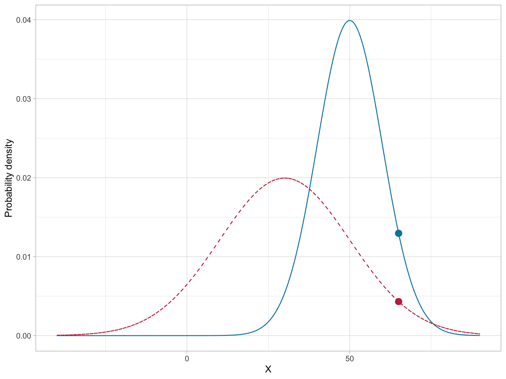
Of course, the PDF is different for normal distributions with different means (\(\mu\)) or standard deviations (\(\sigma\)). This implies that there is not one normal distribution, but rather an infinite number of normal distributions, each with a different mean or standard deviation. (We refer to the normal distribution as a “family” of distributions.)
To completely define the PDF we need to specify the mean and standard deviation we are using to compute the probability densities. Specifying these values is referred to as parameterizing the distribution1.
5.2.1 Other Useful R Functions for Working with Normal Probability Distributions
We use dnorm() when we want to compute the probability density associated with a particular x-value in a given normal distribution. There are three other functions that are quite useful for working with the normal probability distribution:
pnorm(): To compute the probability (area under the PDF)qnorm(): To compute the \(x\) value given a particular probabilityrnorm(): To draw a random observation from the distribution
Each of these function also requires the arguments mean= and sd=. Below we will examine how to use each of these additional functions.
5.2.2 pnorm(): Computing Cumulative Probability Density
The function pnorm() computes the area under the PDF curve from \(-\infty\) to some x-value. (Sometimes this is referred to as the cumulative probability density of x.) It is important to note that the PDF is defined such that the entire area under the curve is equal to 1. Because of this, we can also think about using area under the curve as an analog to probability in a continuous distribution.
For example, we might ask about the probability of observing an x-value that is less than or equal to 65 given it is from a \(\mathcal{N}(50,10)\) distribution. Symbolically, we want to find:
\[ P\bigg(x \leq 65 \mid \mathcal{N}(50,10)\bigg) \]
This is akin to finding the proportion of the area under the \(\mathcal{N}(50,10)\) PDF that is to the left of 65. The figure below shows a graphical depiction of the cumulative probability density for \(x=65\).
Code
# Create dataset
fig_03 = data.frame(
X = seq(from = 10, to = 90, by = 0.01)
) %>%
mutate(
Y = dnorm(x = X, mean = 50, sd = 10)
)
# Filter out X<=65
shaded = fig_03 %>%
filter(X <= 65)
# Create plot
ggplot(data = fig_03, aes(x = X, y = Y)) +
geom_ribbon(data = shaded, ymin = -10, aes(ymax = Y), color = "#bbbbbb", alpha = 0.4) +
geom_line() +
xlab("X") +
ylab("Probability density") +
theme_light()
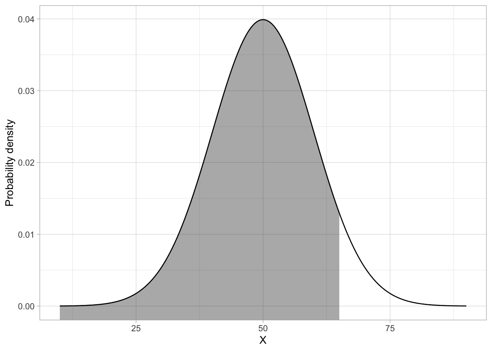
We can compute the cumulative probability density using the pnorm() function. The “p” stand for “probability”.
# Find P(x<=65 | N(50,10) )
pnorm(q = 65, mean = 50, sd = 10)[1] 0.9331928We can interpret this as:
The probability of observing an x-value that is less than or equal to 65 (if it is drawn from a normal distribution with a mean of 50 and standard deviation of 10) is 0.933.
In mathematics, the area under a curve is called an integral. The grey-shaded area in the previous figure can also be expressed as an integral of the probability density function:
\[ \int_{-\infty}^{65} p(x) dx \]
where \(p(x)\) is the PDF for the normal distribution.
The most common application for finding the cumulative density is to compute a p-value. The p-value is just the area under the distribution (curve) that is AT LEAST as extreme as some observed value. For example, assume we computed a test statistic of \(z=2.5\), and were evaluating whether this was different from 0 (two-tailed test). Graphically, we want to determine the proportion of the area under the PDF that is shaded grey in the figure below.
Code
# Create data
fig_04 = data.frame(
X = seq(from = -4, to = 4, by = 0.01)
) %>%
mutate(
Y = dnorm(x = X, mean = 0, sd = 1)
)
# Filter data for shading
shade_01 = fig_04 %>%
filter(X >= 2.5)
shade_02 = fig_04 %>%
filter(X <= -2.5)
# Create plot
ggplot(data = fig_04, aes(x = X, y = Y)) +
geom_ribbon(data = shade_01, ymin = -10, aes(ymax = Y), color = "#bbbbbb", alpha = 0.4) +
geom_ribbon(data = shade_02, ymin = -10, aes(ymax = Y), color = "#bbbbbb", alpha = 0.4) +
geom_line() +
xlab("z") +
ylab("Probability density") +
theme_light()
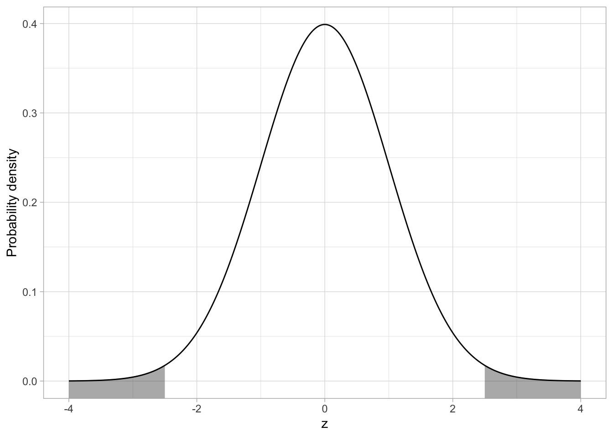
If the distribution of the test statistic is normally distributed, we can use pnorm() to compute the p-value. If we assume the test statistic, z, has been scaled to use standardized units, the standard deviation we use in pnorm() will be sd=1. The mean is based on the value being tested in the null hypothesis. In most null hypotheses, we are testing a difference from 0 (e.g., \(H_0: \mu=0\), \(H_0: \beta=0\)), so we would use mean=0 in the pnorm() function.
Remember, pnorm() computes the proportion of the area under the curve TO THE LEFT of a particular value. Here we will compute the area to the left of \(-2.5\) and then double it to produce the actual p-value. (We can double it because the normal distribution is symmetric so the area to the left of \(-2.5\) is the same as the area to the right of \(+2.5\).)
# Compute the p-value based on z=2.5
2 * pnorm(q = -2.5, mean = 0, sd = 1)[1] 0.01241933We interpret this p-value as:
The probability of observing a statistic at least as extreme as 2.5, assuming the null hypothesis is true, is 0.012. This is evidence against the null hypothesis since the data are inconsistent with the assumed hypothesis.
5.2.3 qnorm(): Computing Quantiles
The qnorm() function is essentially the inverse of the pnorm() function. The pnorm() function computes the cumulative probability GIVEN a particular quantile (x-value). The qnorm() function computes the quantile GIVEN a cumulative probability. For example, in the \(\mathcal{N}(50, 10)\) distribution, half of the area under the PDF is below the x-value (quantile) of 50.
To use the qnorm() function to give the x-value (quantile) that defines the lower 0.5 of the area under the \(\mathcal{N}(50, 10)\) PDF, the syntax would be:
# Find the quantile that has a cumulative density of 0.5 in the N(50, 10) distribution
qnorm(p = 0.5, mean = 50, sd = 10)[1] 505.2.4 rnorm(): Generating Random Observations
The rnorm() function can be used to generate random observations drawn from a specified normal distribution. Aside from the mean= and sd= arguments, we also need to specify the number of observations to generate by including the argument n=. For example, to generate 15 observations drawn from a \(\mathcal{N}(50,10)\) distribution we would use the following syntax:
# Generate 15 observations from N(50,10)
set.seed(100)
rnorm(n = 15, mean = 50, sd = 10) [1] 44.97808 51.31531 49.21083 58.86785 51.16971 53.18630 44.18209 57.14533
[9] 41.74741 46.40138 50.89886 50.96274 47.98366 57.39840 51.23380The set.seed() function sets the state of the random number generator used in R so that the results are reproducible. If you don’t use set.seed() you will get a different set of observations each time you run rnorm(). Here we set the starting seed to 100, but you can set this to any integer you want.
5.3 Student’s t-Distribution
The PDF of Student’s t-distribution looks similar to the PDF for a standard normal distribution. In the figure below, Student’s t-distribution is depicted with a solid, black line and the standard normal distribution (\(M=0\), \(SD=1\)) is depicted with a dotted, red line.
Code
# Create data
fig_05 = data.frame(
X = seq(from = -4, to = 4, by = 0.01)
) %>%
mutate(
Y_t = dt(x = X, df = 5),
Y_norm = dnorm(x = X, mean = 0, sd = 1)
)
# Create plot
ggplot(data = fig_05, aes(x = X, y = Y_t)) +
geom_line() +
geom_line(aes(y = Y_norm), color = "red", linetype = "dotted") +
xlab("t") +
ylab("Probability density") +
theme_light() +
geom_vline(xintercept = 0)
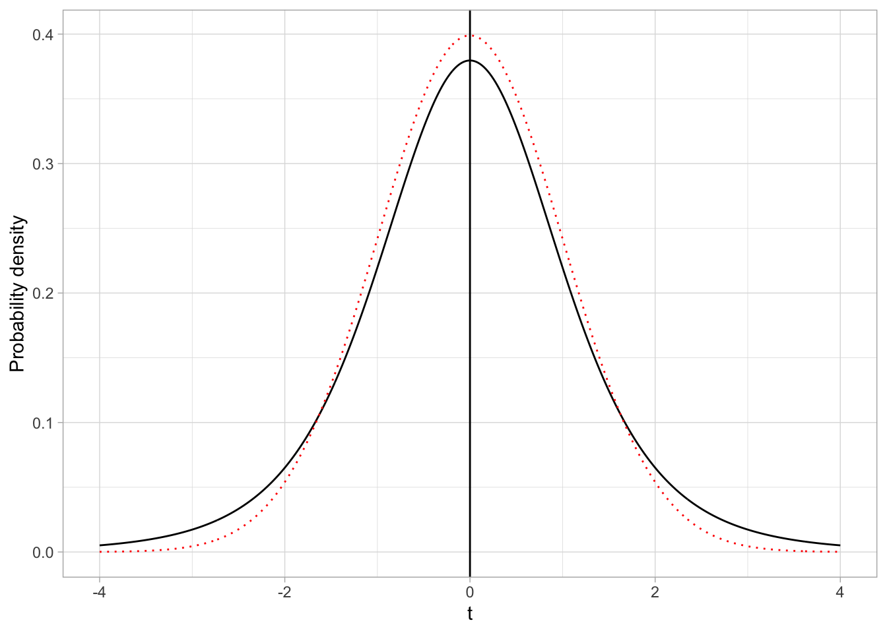
- Both the standard normal distribution and Student’s t-distribution are symmetric distributions.
- Both the standard normal distribution and Student’s t-distribution have a mean (expected value) of 0.
- The standard deviation for Student’s t-distribution is, however, larger than the standard deviation for the standard normal distribution (\(SD>1\)). You can see this in the distribution because the tails in Student’s t-distribution are fatter (more error) than the standard normal distribution.
In practice, we often use Student’s t-distribution rather than the standard normal distribution in our evaluations of sample data. This is because the increased error (i.e., standard deviation) associated with Student’s t-distribution better models the additional uncertainty associated with having incomplete information (i.e., a sample rather than the entire population).
Student’s t-distribution also constitutes a family of distributions; there is not a single t-distribution. The specific shape (and thus probability density) is defined by a parameter called the degrees of freedom (df). The plot below shows the standard normal distribution (purple) and four t-distributions with varying df-values. The means and standard deviations for each of these distributions is also provided in a table.
Code
# Create data for t(3)
df_03 = data.frame(
X = seq(from = -4, to = 4, by = 0.01)
) %>%
mutate(
Y = dt(x = X, df = 3),
df = "03"
)
# Create data for t(5)
df_05 = data.frame(
X = seq(from = -4, to = 4, by = 0.01)
) %>%
mutate(
Y = dt(x = X, df = 5),
df = "05"
)
# Create data for t(10)
df_10 = data.frame(
X = seq(from = -4, to = 4, by = 0.01)
) %>%
mutate(
Y = dt(x = X, df = 10),
df = "10"
)
# Create data for t(25)
df_25 = data.frame(
X = seq(from = -4, to = 4, by = 0.01)
) %>%
mutate(
Y = dt(x = X, df = 25),
df = "25"
)
# Create data for standard normal
z = data.frame(
X = seq(from = -4, to = 4, by = 0.01)
) %>%
mutate(
Y = dnorm(x = X, mean = 0, sd = 1),
df = "Standard normal"
)
# Combine all datasets into one
fig_06 = rbind(df_03, df_05, df_10, df_25, z)
# Create plot
ggplot(data = fig_06, aes(x = X, y = Y, color = df, linetype = df)) +
geom_line() +
xlab("t") +
ylab("Probability density") +
theme_light() +
geom_vline(xintercept = 0) +
ggsci::scale_color_d3() +
scale_linetype_manual(values = 5:1)
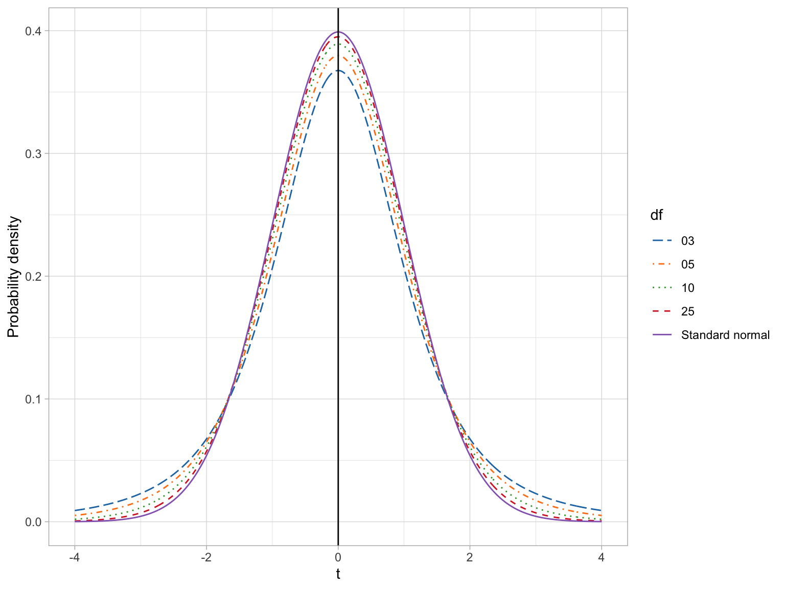
Code
# Load library
library(gt)
# Create data from table
tab_01 = data.frame(
df = c("3", "5", "10", "25", "z"),
M = 0.00,
SD = c(2, 1.5, 1.22, 1.08, 1.00)
)
# Create table
tab_01 |>
gt() |>
cols_label(
df = md("*df*"),
M = md("*M*"),
SD = md("*SD*")
) |>
cols_align(
columns = c(df, M, SD),
align = "center"
)| df | M | SD |
|---|---|---|
| 3 | 0 | 2.00 |
| 5 | 0 | 1.50 |
| 10 | 0 | 1.22 |
| 25 | 0 | 1.08 |
| z | 0 | 1.00 |
If we compare the means and standard deviations for these distributions, we find that the mean for all the t-distributions is 0, same as the standard normal distribution. All t-distributions are unimodal and symmetric around zero. The standard deviation for every t-distribution is higher than the standard deviation for the standard normal distribution. Mathematically, the variance for the t-distribution is:
\[ \sigma^2(t) = \frac{\nu}{\nu-2} \]
where \(\nu\) (the Greek letter nu) is the degrees of freedom. (Note that \(\nu \geq 2\).) Examining this formula, we find that Student t-distributions with higher df values have less variation. When \(\nu=+\infty\), the variance approaches 1, which is the same as the standard normal distribution.
There are four primary functions for working with Student’s t-distribution:
dt(): To compute the probability density (point on the curve)pt(): To compute the cumulative density (area under the PDF)qt(): To compute the quantile value given a particular probabilityrt(): To draw a random observation from the distribution
Each of these requires the argument df=.
5.4 The F-distribution
The F-distribution, like the t-distribution, constitutes a family of distributions. They are positively skewed and generally have a lower-limit of 0. To parameterize an F-distribution we need two parameters, namely \(\nu_1\) and \(\nu_2\). These are both degrees of freedom. The exact shape of the F-distribution s governed by the two degrees of freedom parameters. The figure below shows several F-distributions with different degrees of freedom.
Code
# Create data for F(1,10)
f1 = data.frame(
X = seq(from = 0, to = 10, by = 0.01)
) %>%
mutate(
Y = df(x = X, df1 = 1, df2 = 10),
df = "F(1, 10)"
)
# Create data for F(5,25)
f2 = data.frame(
X = seq(from = 0, to = 10, by = 0.01)
) %>%
mutate(
Y = df(x = X, df1 = 5, df2 = 25),
df = "F(5, 25)"
)
# Create data for F(15,30)
f3 = data.frame(
X = seq(from = 0, to = 10, by = 0.01)
) %>%
mutate(
Y = df(x = X, df1 = 15, df2 = 30),
df = "F(15, 30)"
)
# Create data for F(30,60)
f4 = data.frame(
X = seq(from = 0, to = 10, by = 0.01)
) %>%
mutate(
Y = df(x = X, df1 = 30, df2 = 60),
df = "F(30, 60)"
)
# Combine all datasets into one
fig_07 = rbind(f1, f2, f3, f4)
# Create plot
ggplot(data = fig_07, aes(x = X, y = Y, color = df, linetype = df)) +
geom_line() +
xlab("F") +
ylab("Probability density") +
theme_light() +
ggsci::scale_color_d3(name = "") +
scale_linetype_manual(name = "", values = 1:4)
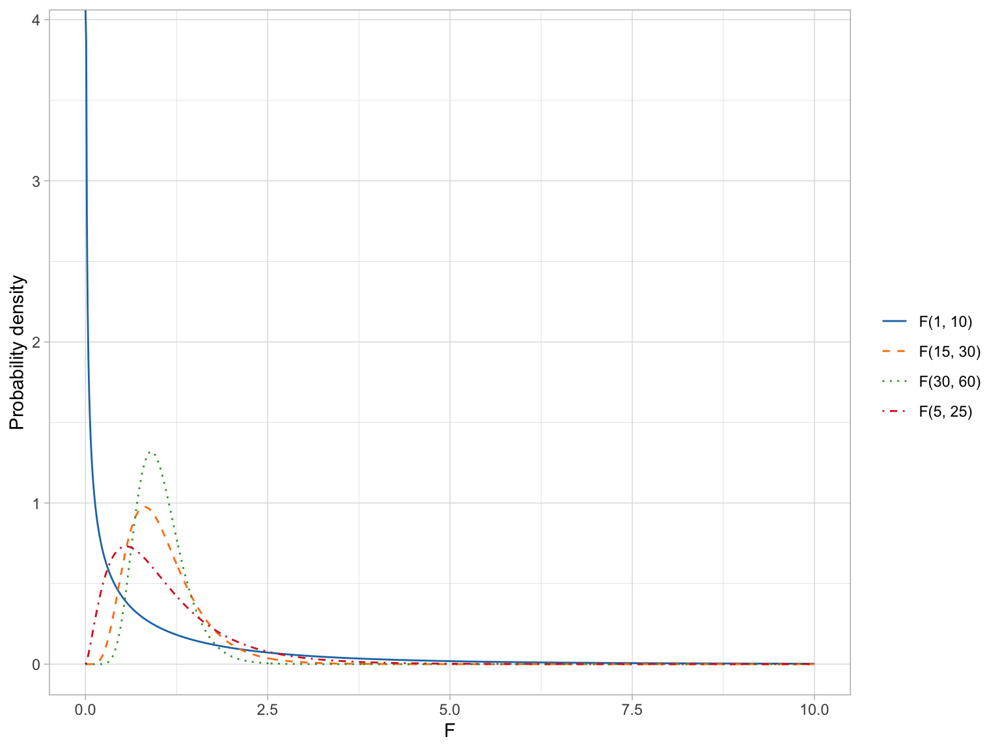
The expected value (mean) and standard deviation of the F-distribution is:
\[ \begin{split} E(F) &= \frac{\nu_2}{\nu_2 - 2} \\[1ex] \sigma^2(F) &= \frac{2\nu_2^2(\nu_1 + \nu_2 - 2)}{\nu_1(\nu_2-2)^2(\nu_2-4)} \end{split} \]
where \(\nu_2 > 2\) for the mean and \(\nu_2 > 4\) for the variance.
From these formulas we can see that as \(\nu_2 \rightarrow +\infty\) the mean of the F-distribution approaches 1. We can also see that the variation in the F-distribution is a function of both parameters and the variance decreases as either parameter gets larger.
The means and standard deviations for our four example F-distributions are given in the table below.
Code
# Create data from table
tab_02 = data.frame(
df1 = c(1, 15, 30, 5),
df2 = c(10, 30, 60, 25)
) %>%
mutate(
M = df2 / (df2 - 2),
SD = sqrt((2*df2^2*(df1 + df2 - 2)) / (df1*(df2-2)^2*(df2-4)))
)
# Create table
tab_02 |>
gt() |>
cols_label(
df1 = md("*df1*"),
df2 = md("*df2*"),
M = md("*M*"),
SD = md("*SD*")
) |>
cols_align(
columns = c(df1, df2, M, SD),
align = "center"
) |>
fmt_number(
columns = c(M, SD),
decimals = 2
)| df1 | df2 | M | SD |
|---|---|---|---|
| 1 | 10 | 1.25 | 2.17 |
| 15 | 30 | 1.07 | 0.50 |
| 30 | 60 | 1.03 | 0.33 |
| 5 | 25 | 1.09 | 0.79 |
Because there is no negative side of the distribution, when we use the F-distribution to compute a p-value, we only compute the cumulative density GREATER THAN OR EQUAL TO the value of the F-statistic. For example, the figure below shows the \(F(5,25)\)-distribution and the shaded area corresponds to the p-value for an observed F-statistic of 2.
Code
# Create data for F(5,25)
fig_08 = data.frame(
X = seq(from = 0, to = 10, by = 0.01)
) %>%
mutate(
Y = df(x = X, df1 = 5, df2 = 25)
)
# Filter data for shading
shade_01 = fig_08 %>%
filter(X >= 2)
# Create plot
ggplot(data = fig_08, aes(x = X, y = Y)) +
geom_ribbon(data = shade_01, ymin = 0, aes(ymax = Y), color = "#bbbbbb", alpha = 0.4) +
geom_line() +
xlab("F") +
ylab("Probability density") +
theme_light()
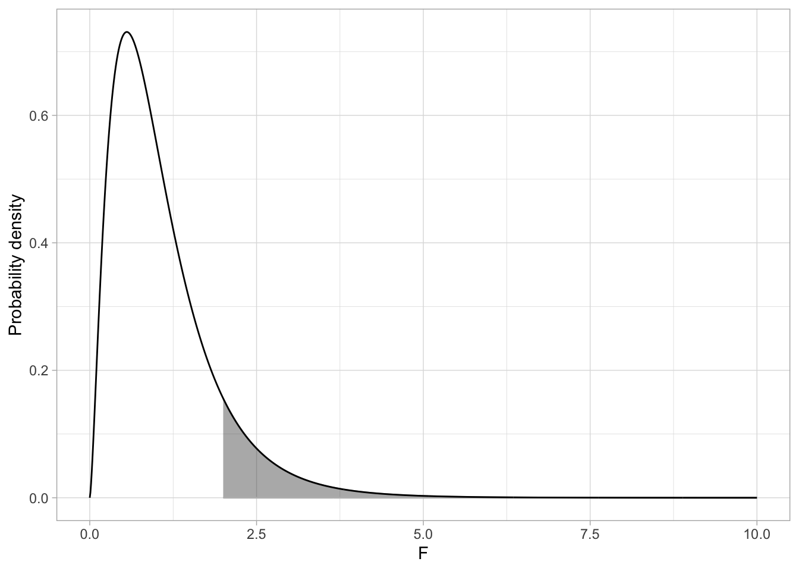
Here we can use the pf() function to compute the p-value. Remember, pf() computes the proportion of the area under the curve TO THE LEFT of a particular value. Here we will need to compute the area to the RIGHT of \(+2\).
# Compute the p-value based on F(5,25)=2
1 - pf(q = 2, df1 = 5, df2 = 25)[1] 0.1134803The probability of observing an F-statistic at least as extreme as 2, assuming the null hypothesis is true, is 0.113. This is not evidence against the null hypothesis since the data are consistent with the assumed hypothesis.
5.5 Creating a PDF and Adding Shading in a ggplot
One method to create the PDF for a distribution using ggplot() is to create a dataset that includes a sequence of X-values for which you want to show the PDF and compute the probability density for each of those values. Then you can use geom_line() to connect those probability densities.
For example, say we want to create the PDF of the \(F(15, 100)\)-distribution. Here I will define this for F-values from 0 to 10. (These are the x-values in my plot.) Then I need to compute the probability densities for each of those values using pf().
# Create F-value and compute probability densities
fig_09 = data.frame(
X = seq(from = 0, to = 10, by = 0.01)
) %>%
mutate(
Y = df(x = X, df1 = 5, df2 = 25)
)
# View data
head(fig_09) X Y
1 0.00 0.000000000
2 0.01 0.008319698
3 0.02 0.022838243
4 0.03 0.040722606
5 0.04 0.060856280
6 0.05 0.082557740Then we can plot the Y versus the X values and connect them using geom_line().
ggplot(data = fig_09, aes(x = X, y = Y)) +
geom_line() +
xlab("F") +
ylab("Probability density") +
theme_light()
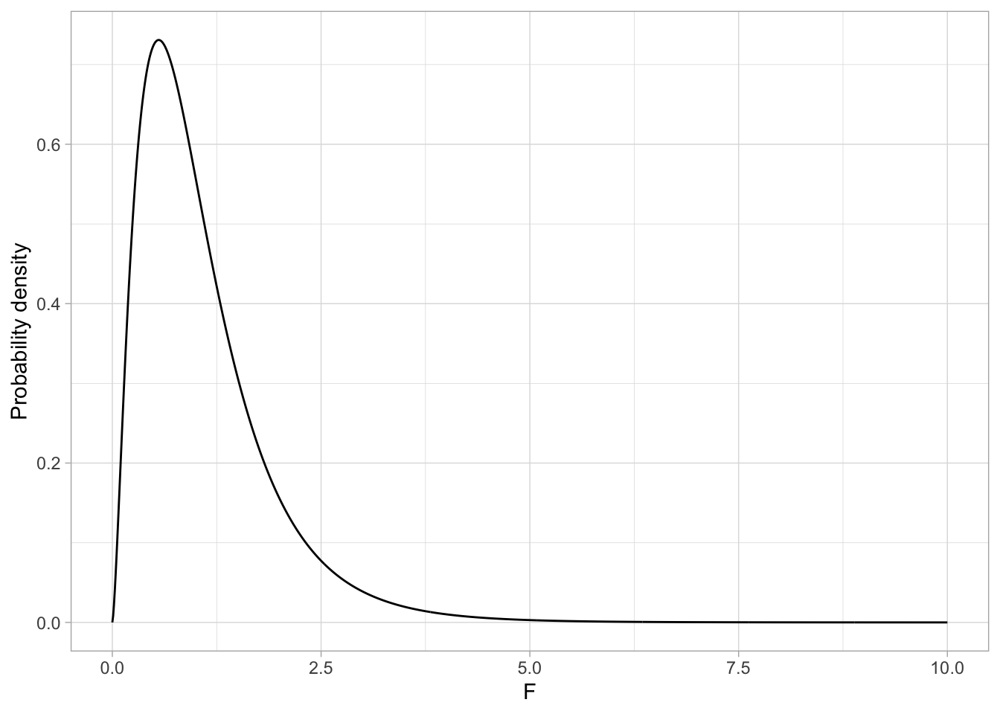
To add shading under the curve we need to create a new dataset that only includes the X and Y values in the shaded region. For example to shade the area under the PDF where \(F > 2\), we need to create a new dataset where the X values are greater than 2. Below I do this using filter() and store the data in an object called shade_01.
# Filter data included in the shaded region
shade_09 = fig_09 %>%
filter(X >= 2)
# View data
head(shade_09) X Y
1 2.00 0.1558647
2 2.01 0.1537083
3 2.02 0.1515807
4 2.03 0.1494816
5 2.04 0.1474106
6 2.05 0.1453676We re-draw the PDF and then use geom_ribbon() to add shading. This layer requires us to define the area we want shaded. Here we want to shade from \(Y=0\) to \(Y=\) the probability density for each of the X values in the shading data. To carry this out we need to define x=, ymin= and ymax=.
Since the X values are in a column called X and the probability densities are in a column called Y in the shaded dataa frame, we can call x=X and ymax=Y in the aes() of geom_ribbon(). The ymin= value of 0 is not a column in the data frame, so it is specified OUTSIDE the aes() function. We can then also set characteristics like color of the shading (color=) and transparency level (alpha=). Finally, to ensure that geom_ribbon() is shading only the region we want, we set data=shade_01.
# Create plot
ggplot(data = fig_09, aes(x = X, y = Y)) +
geom_ribbon(data = shade_09, ymin = 0, aes(x = X, ymax = Y),
color = "#bbbbbb", alpha = 0.4) +
geom_line() +
xlab("F") +
ylab("Probability density") +
theme_light()You can click the Code button to see the underlying syntax for many of the figures created in this document.
5.6 Probability Distributions in Regression
To illustrate how probability distributions are used in practice, we will will use the data in the file riverview.csv (see the data codebook for more information about these data) and fit a regression model that uses education level and seniority to predict variation in employee income. Some (most?) of this content should also be review from EPsy 8251.
# Load libraries
library(broom)
library(tidyverse)
# Import data
city = read_csv(file = "https://raw.githubusercontent.com/zief0002/bespectacled-antelope/main/data/riverview.csv")Rows: 32 Columns: 5
── Column specification ────────────────────────────────────────────────────────
Delimiter: ","
chr (2): gender, party
dbl (3): education, income, seniority
ℹ Use `spec()` to retrieve the full column specification for this data.
ℹ Specify the column types or set `show_col_types = FALSE` to quiet this message.# View data
city# A tibble: 32 × 5
education income seniority gender party
<dbl> <dbl> <dbl> <chr> <chr>
1 8 26.4 9 female Independent
2 8 37.4 7 Not female Democrat
3 10 34.2 16 female Independent
4 10 25.5 1 female Republican
5 10 47.0 14 Not female Democrat
6 12 46.5 11 female Democrat
7 12 52.5 16 female Independent
8 12 37.7 14 Not female Democrat
9 12 50.3 24 Not female Democrat
10 14 32.6 5 female Independent
# ℹ 22 more rowsTo begin, we will fit a multiple regression model that uses level of education and seniority to predict variation in employee’s incomes. The model is:
\[ \begin{split} \mathrm{Income}_i &= \beta_0 + \beta_1(\mathrm{Education}_i) + \beta_2(\mathrm{Seniority}_i) + \epsilon_i \\ & \mathrm{where}\quad \epsilon_i \sim \mathcal{N}(0, \sigma^2_{\epsilon}) \end{split} \]
We have four unknowns in this model that need to be estimated: \(\beta_0\), \(\beta_1\), \(\beta_2\), and \(\sigma^2_{\epsilon}\). This last unknown is the error (or residual) variance. As a side note, when you report results from a fitted regression model, you should report the estimated residual variance (or residual standard error) along with the coefficient estimates.
Aside from the estimates for the coefficients and RSE, we are also generally interested in the estimates of uncertainty for the coefficients (i.e., the standard errors). These uncertainty estimates also allow us to carry out hypothesis tests on the effects included in the model.
# Fit regression model
lm.1 = lm(income ~ 1 + education + seniority, data = city)In practice, all of the estimates, SEs, and inferential output are available using functionality in R. For example, the model-level output, including \(R^2\), the F-statistic, the model and residual df, and the residual standard error are all outputted from the glance() function from the {broom} package. We can also partition the variation using the anova() function.
# Model-level output
glance(lm.1)# A tibble: 1 × 12
r.squared adj.r.squared sigma statistic p.value df logLik AIC BIC
<dbl> <dbl> <dbl> <dbl> <dbl> <dbl> <dbl> <dbl> <dbl>
1 0.742 0.724 7.65 41.7 0.00000000298 2 -109. 226. 232.
# ℹ 3 more variables: deviance <dbl>, df.residual <int>, nobs <int># Partition the variation
anova(lm.1)Analysis of Variance Table
Response: income
Df Sum Sq Mean Sq F value Pr(>F)
education 1 4147.3 4147.3 70.944 2.781e-09 ***
seniority 1 722.9 722.9 12.366 0.00146 **
Residuals 29 1695.3 58.5
---
Signif. codes: 0 '***' 0.001 '**' 0.01 '*' 0.05 '.' 0.1 ' ' 1Similarly the tidy() function from the {broom} package outputs coefficient-level output, including the coefficients, standard errors, t-values, and associated p-values.
# Coefficient-level output
tidy(lm.1, conf.int = TRUE)# A tibble: 3 × 7
term estimate std.error statistic p.value conf.low conf.high
<chr> <dbl> <dbl> <dbl> <dbl> <dbl> <dbl>
1 (Intercept) 6.77 5.37 1.26 0.218 -4.22 17.8
2 education 2.25 0.335 6.73 0.000000220 1.57 2.94
3 seniority 0.739 0.210 3.52 0.00146 0.309 1.17Our goal here is to understand how the probability distributions play a role in determining some of these values.
5.7 Model-Level Inference: The F-Distribution
At the model-level, we are interested in whether or not the model (as a whole) explains variation in the outcome. Our estimate of how much variation the model explains is based on partitioning the total variation of the outcome (\(\mathrm{SS}_{\mathrm{Total}}\)) into that which is explained by the model (\(\mathrm{SS}_{\mathrm{Model}}\)) and that which is not explained by the model (\(\mathrm{SS}_{\mathrm{Residual}}\)). From the anova() output:
\[ \begin{split} \mathrm{SS}_{\mathrm{Model}} &= 4147.3 + 722.9 = 4870.2\\[1ex] \mathrm{SS}_{\mathrm{Residual}} &= 1695.3\\[1ex] \mathrm{SS}_{\mathrm{Total}} &= 4870.2 + 1695.3 = 6565.5 \end{split} \]
Then we compute the a statistic called \(R^2\) by computing the ratio of the explained variation to the total variation.
\[ R^2 = \frac{4870.2}{6565.5} = 0.742 \]
The model (differences in education and seniority levels) explains 74.2% of the variation in employee’s incomes in the sample. We might also want to test whether this is more variation than we expect because of sampling error. To do this we want to test the hypothesis that:
\[ H_0: \rho^2 = 0 \]
To evaluate this we convert the sample \(R^2\) value into a test statistic using,
\[ F = \frac{R^2}{1 - R^2} \times \frac{\mathit{df}_{\mathrm{Error}}}{\mathit{df}_{\mathrm{Model}}} \]
The degrees of freedom (df) is also partitioned in the anova() output:
\[ \begin{split} \mathrm{df}_{\mathrm{Model}} &= 1 + 1 = 2\\[1ex] \mathrm{df}_{\mathrm{Residual}} &= 29\\[1ex] \mathrm{df}_{\mathrm{Total}} &= 2 + 29 = 31 \end{split} \]
Converting our \(R^2\) value of 0.742 value to an F-statistic:
\[ \begin{split} F &= \frac{0.742}{1-0.742} \times \frac{29}{2} \\ &= 41.7 \end{split} \]
We write this standardization of \(R^2\) as \(F(2,29)=41.7\).
5.7.1 Computing F from the ANOVA Partitioning
We can also compute the model-level F-statistic directly using the partitioning of variation from the ANOVA table.
# Partition the variation
anova(lm.1)Analysis of Variance Table
Response: income
Df Sum Sq Mean Sq F value Pr(>F)
education 1 4147.3 4147.3 70.944 2.781e-09 ***
seniority 1 722.9 722.9 12.366 0.00146 **
Residuals 29 1695.3 58.5
---
Signif. codes: 0 '***' 0.001 '**' 0.01 '*' 0.05 '.' 0.1 ' ' 1The F-statistic is a ratio of the mean square for the model and the mean square for the error. To compute a mean square we use the general formula:
\[ \mathrm{MS} = \frac{\mathrm{SS}}{\mathrm{df}} \]
The model includes both the education and seniority predictor, so we combine the SS and df. The MS model is:
\[ \begin{split} \mathrm{MS}_{\mathrm{Model}} &= \frac{\mathrm{SS}_{\mathrm{Model}}}{\mathrm{df}_{\mathrm{Model}}} \\[1ex] &= \frac{4147.3 + 722.9}{1 + 1} \\[1ex] &= \frac{4870.2}{2} \\[1ex] &= 2435.1 \end{split} \]
The MS error is:
\[ \begin{split} \mathrm{MS}_{\mathrm{Error}} &= \frac{\mathrm{SS}_{\mathrm{Error}}}{\mathrm{df}_{\mathrm{Error}}} \\[1ex] &= \frac{1695.3 }{29} \\[1ex] &= 58.5 \end{split} \]
Then, we compute the F-statistic by computing the ratio of these two mean squares.
\[ \begin{split} F &= \frac{\mathrm{MS}_{\mathrm{Model}}}{\mathrm{MS}_{\mathrm{Error}}} \\[1ex] &= \frac{2435.1}{58.5} \\[1ex] &= 41.6 \end{split} \]
Since a mean square represents the average amount of variation (per degree of freedom), we can see that F is a ratio between the average amount of variation explained by the model and the average amount of variation unexplained by the model. In our example, this ratio is 41.6; on average the model explains 41.6 times the variation that is unexplained.
Note that this is an identical computation (although reframed) as the initial computation for F. We can use mathematics to show this equivalence:
\[ \begin{split} F &= \frac{R^2}{1-R^2} \times \frac{\mathrm{df}_{\mathrm{Error}}}{\mathrm{df}_{\mathrm{Model}}} \\[1ex] &= \frac{\frac{\mathrm{SS}_{\mathrm{Model}}}{\mathrm{SS}_{\mathrm{Total}}}}{\frac{\mathrm{SS}_{\mathrm{Error}}}{\mathrm{SS}_{\mathrm{Total}}}} \times \frac{\mathrm{df}_{\mathrm{Error}}}{\mathrm{df}_{\mathrm{Model}}} \\[1ex] &= \frac{\mathrm{SS}_{\mathrm{Model}}}{\mathrm{SS}_{\mathrm{Error}}} \times \frac{\mathrm{df}_{\mathrm{Error}}}{\mathrm{df}_{\mathrm{Model}}} \\[1ex] &= \frac{\mathrm{SS}_{\mathrm{Model}}}{\mathrm{df}_{\mathrm{Model}}} \times \frac{\mathrm{df}_{\mathrm{Error}}}{\mathrm{SS}_{\mathrm{Error}}} \\[1ex] &= \mathrm{MS}_{\mathrm{Model}} \times \frac{1}{\mathrm{MS}_{\mathrm{Error}}}\\[1ex] &= \frac{\mathrm{MS}_{\mathrm{Model}}}{\mathrm{MS}_{\mathrm{Error}}} \end{split} \]
5.7.2 Testing the Model-Level Null Hypothesis
We evaluate our test statistic (F in this case) in the appropriate test distribution, in this case an F-distribution with 2 and 29 degrees of freedom. The figure below, shows the \(F(2,29)\)-distribution as a solid, black line. The p-value is the area under the curve that is at least as extreme as the observed F-value of 41.7.
Code
# Create data
fig_11 = data.frame(
X = seq(from = 0, to = 50, by = 0.01)
) %>%
mutate(
Y = df(x = X, df1 = 2, df2 = 29)
)
# Filter shaded area
shade = fig_11 %>%
filter(X >= 41.7)
# Create plot
ggplot(data = fig_11, aes(x = X, y = Y)) +
geom_line() +
theme_bw() +
geom_ribbon(data = shade, ymin = -10, aes(ymax = Y), color = "#bbbbbb", alpha = 0.4)
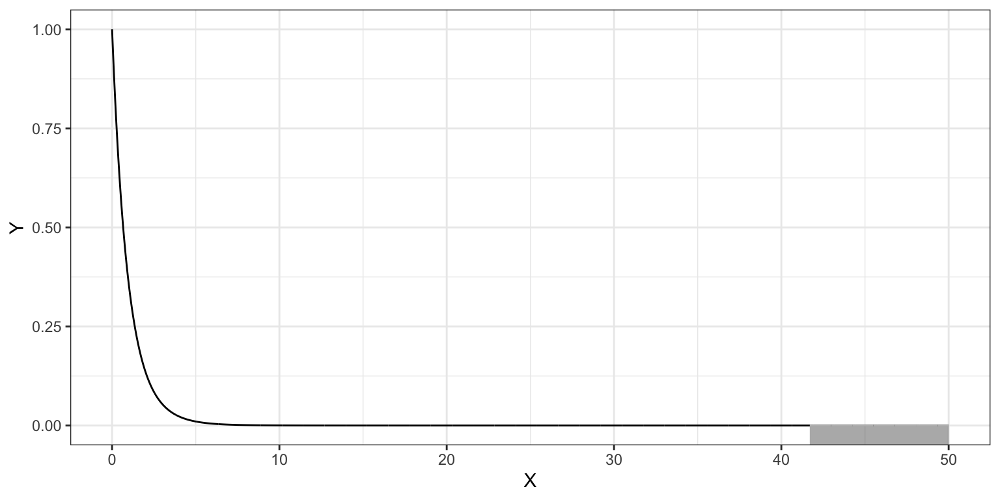
The computation using the cumulative density function, pf(), to obtain the p-value is:
# p-value for F(2,29)=41.7
1 - pf(41.7, df1 = 2, df2 = 29)[1] 2.942114e-09Because we want the upper-tail, rather than taking the difference from 1, we can also use the lower.tail=FALSE argument in pf().
# p-value for F(2,29)=41.7
pf(41.7, df1 = 2, df2 = 29, lower.tail = FALSE)[1] 2.942114e-095.7.3 Mean Squares are Variance Estimates
Mean squares are also estimates of the variance. Consider the computational formula for the sample variance,
\[ \hat{\sigma}^2 = \frac{\sum(Y - \bar{Y})^2}{n-1} \]
This is the total sum of squares divided by the total df. The variance of the outcome variable is interpreted as the average amount of variation in the outcome variable (in the squared metric). Thus, it is also referred to as the mean square total.
When we compute an F-statistic, we are finding the ratio of two different variance estimates—one based on the model (explained variance) and one based on the error (unexplained variance). Under the null hypothesis that \(\rho^2 = 0\), we are assuming that all the variance is unexplained. In that case, our F-statistic would be close to zero. When the model explains a significant amount of variation, the numerator gets larger relative to the denominator and the F-value is larger.
The mean squared error (from the anova() output) plays a special role in regression analysis. It is the variance estimate for the conditional distributions of the residuals in our visual depiction of the distributional assumptions of the residuals underlying linear regression.
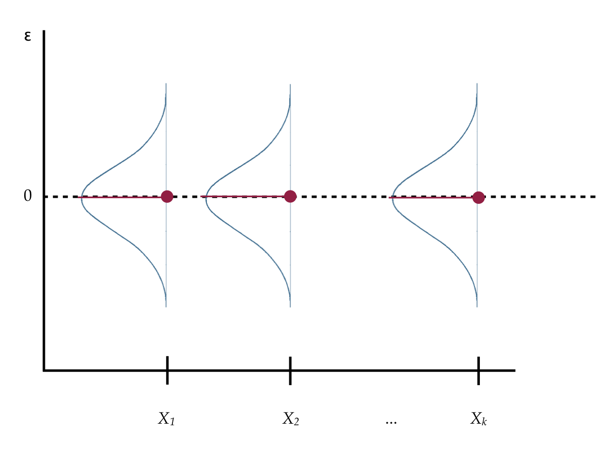
Recall that we made implicit assumptions about the conditional distributions of the residuals, namely that they were identically and normally distributed with a mean of zero and some variance. Based on the estimate of the mean squared error, the variance of each of these distributions is 58.5.
While the variance is a mathematical convenience, the standard deviation is often a better descriptor of the variation in a distribution since it is measured in the original metric. The standard deviation fro the residuals (error) is 7.6. Because the residuals are statistics (summaries computed from sample data), their standard deviation is referred to as a “standard error”.
The residual standard error (RSE) is sometimes referred to as the Root Mean Squared Error (RMSE).
# Compute RMSE
sqrt(58.5)[1] 7.648529Why is this value important? It gives the expected variation in the conditional residual distributions, which is a measure of the average amount of error. For example, since all of the conditional distributions of the residuals are assumed to be normally distributed, we would expect that 95% of the residuals would fall between \(\pm2\) standard errors from 0; or, in this case, between \(-15.3\) and \(+15.3\). Observations with residuals that are more extreme may be regression outliers.
More importantly, it is a value that we need to estimate in order to specify the model.
5.8 Coefficent-Level Inference: The t-Distribution
Recall that the coefficients and SEs for the coefficients are computed directly from the raw data based on the OLS estimation. These can then be uses to construct a test statistic (e.g., t) to carry out a hypothesis test or compute endpoints for a confidence interval. To see how this is done, we will consider the partial effect of education level (after controlling for differences in seniority) in our fitted model.
\[ \begin{split} \hat\beta_{\mathrm{Education}}&=2.25 \\[1ex] \mathrm{SE}(\hat\beta_{\mathrm{Education}}) &=0.335 \end{split} \]
We might want to test whether the partial effect of education level on income, after accounting for differences in seniority level, we observed in the data is more than we would expect because of sampling error. To answer this we need to evaluate the following hypothesis:
\[ H_0: \beta_{\mathrm{Education}} = 0 \]
We begin by converting our estimated regression coefficient to a t-statistic using:
\[ t_k = \frac{\hat\beta_k}{\mathrm{SE}(\hat\beta_k)} \]
In our example,
\[ \begin{split} t_{\mathrm{Education}} &= \frac{2.25}{0.335} \\[1ex] &= 6.72 \end{split} \]
Remember this tells us the education coefficient of 2252 is 6.72 standard errors above 0. Since we are estimating the SE using sample data, our test statistic is likely t-distributed2. Which value should we use for df? Well, for that, statistical theory tells us that we should use the error df value from the model. In our example, this would be:
\[ t(29) = 6.72 \]
Using the t-distribution with 29 df, we can compute the p-value associated with the two-tailed test that \(\beta_{\mathrm{Education}=0}\):
# p-value for the two-tailed test of no effect of education
2 * pt(q = -6.72, df = 29)[1] 2.257125e-07# alternatively
2 * pt(q = 6.72, df = 29, lower.tail = FALSE)[1] 2.257125e-07The p-value is 0.0000002. The data are inconsistent with the hypothesis that there is no partial effect of education level on income (after accounting for differences in seniority level).
We could also carry out these tests for the partial effect of seniority level and, if it is of interest, for the intercept. For both of those tests, we would use the same t-distribution, but our test statistic would be computed based on the coefficient estimates and standard errors for those terms, respectively.
5.8.1 Confidence/Compatibility Intervals for the Coefficients
The confidence interval for the kth regression coefficient is computed as:
\[ \mathrm{CI} = \hat\beta_k \pm t^{*}(\mathrm{SE}_{\hat\beta_k}) \]
where \(t^*\) is the quantile of the t-distribution that defines the confidence level for the interval. (This t-distribution, again, has degrees-of-freedom equal to the error df in the model.) The confidence level is related to the alpha level (type I error rate) used in inference. Namely,
\[ \mathrm{Confidence~Level} = 1 - \alpha \]
So, if you use \(\alpha=.05\), then the confidence level would be \(.95\), and we would call this a 95% confidence interval. The alpha value also helps determine the quantile we use in the CI formula,
\[ t^* = (1-\frac{\alpha}{2}) ~ \mathrm{quantile} \] For the example using \(\alpha=.05\), a 95% confidence interval, the \(t^*\) value would be associated with the quantile of 0.975. We would denote this as:
\[ t^{*}_{.975} \]
Say we wanted to find the 95% confidence interval for the education coefficient. We know that the estimated coefficient for education is 2.25, and the standard error for this estimate is 0.335. We also know that based on the model fitted, the residual df is 29. We need to find the 0.975th quantile in the t-distribution with 29 df.
# Find 0.975th quantile
qt(p = 0.975, df = 29)[1] 2.04523Now we can use all of this information to compute the confidence interval:
\[ \begin{split} 95\%~CI &= 2.25 \pm 2.04523(0.335) \\[1ex] &= \big[1.56,~2.94\big] \end{split} \]
5.9 Learn More
For more information, you can also see the section Some Continuous Distributions in CHapter 5 of the Fox (2021) textbook.
5.10 References
Fox, J. (2021). A mathematical primer for social statistics (2nd ed.). Sage.